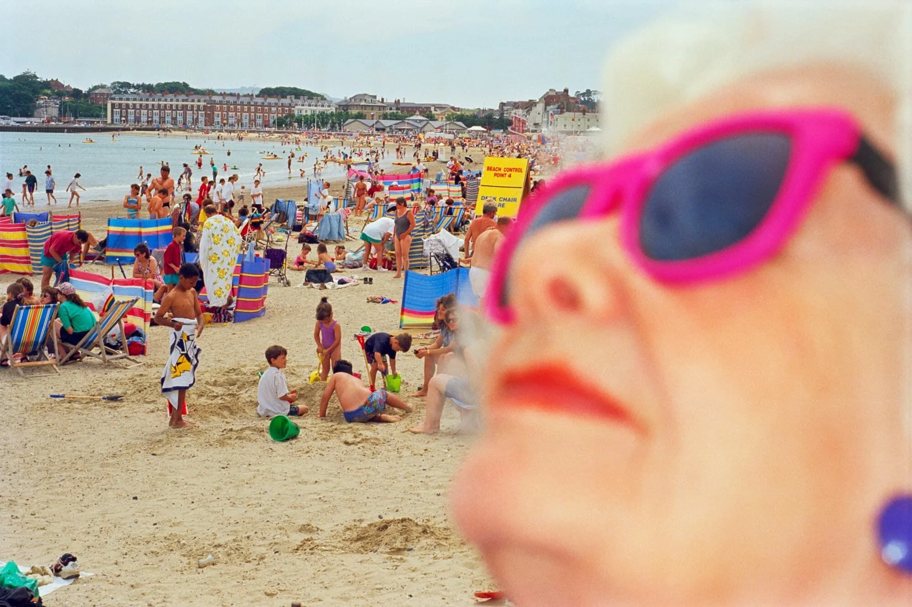

Campaña de verano – Sorteo de Navidad de la ONCE
> Agencia: Sra. Rushmore
> Directora creativa: Ángela Cadiñanos
Palitas
“Cuando estas vacaciones pases por el quiosco de la ONCE de la playa, recuerda a esa parejita de las palas que se tiran horas que si pim, que pong, pim, pong. Que pim, que pong.A esos torturadores de la pelotita les pueden tocar 400.000 €.Porque el sorteo de Navidad de la ONCE te puede tocar justo donde te vas este verano. A ver si justo a ti no te va a tocar. Hay más de 900.000 cupones premiados y 75 premios de 400.000 €.Sorteo de Navidad de la ONCE"Ducha
“Cuando estas vacaciones pases delante de un vendedor de la ONCE, recuerda a esa señora que en la ducha de la playa se lava un pie. Luego, otro pie. Luego, la chancla. La otra chancla. El cubo. El rastrillo. Y lo que haga falta con tal de que a ti no te toque nunca.A esa acaparadora de agua dulce le puede tocar 400.000 €.Porque el sorteo de Navidad de la ONCE te puede tocar justo donde te vas este verano. A ver si justo a ti no te va a tocar. Hay más de 900.000 cupones premiados y 75 premios de 400.000 €.Sorteo de Navidad de la ONCE"Señoras
“Cuando estas vacaciones pases junto al vendedor de la ONCE de la plaza del pueblo, recuerda a ese par de señoras que cada vez que pasas por su puerta comentan en voz, no tan baja: 'Ay que ver esta, con lo guapa que era de cría.'Sí, a esas vecinas de lengua fácil pueden tocarles 400.000 €. ¿Y a ti, no?Por si acaso, estés donde estés este verano llévate el cupón del sorteo de Navidad de la ONCE. Hay más de 910.00 cupones premiados y 75 premios de 400.000 €. Cómpralo ya, no vaya a ser que toque.Sorteo de Navidad de la ONCE"